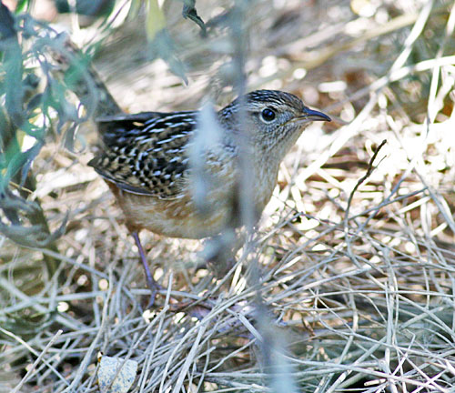

| These photographs accompany records that have been recently submitted to the committee. This record
has been ACCEPTED.  Sedge Wren Cistothorus platensis 17 October 2009, Glen Helen Regional Park, Devore., SBE 2009-192 © 2009 Thomas A. Benson Back to CBRC Rare Bird Photos |